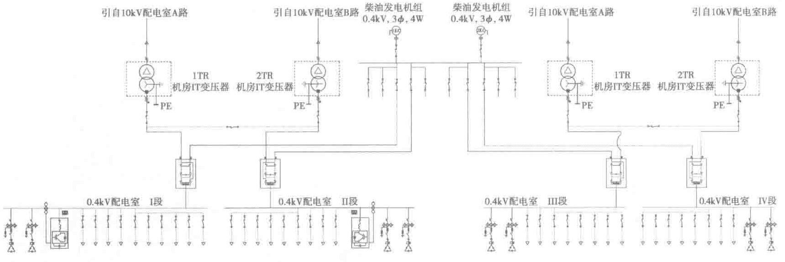

- 10kVⅠ、Ⅱ段母线发电机电源进线断路器与市电电源断路器之间设电气联锁，市电电源进线断路器信号确认断开后，发电机电源进线断路器才能合闸，禁止市电与柴油发电机并联运行。
2. 低压0.4kV配电系统

（1）运行方式
- 变电所10kV主接线采用分段单母线，正常运行时，两路10kV电源分别向两段母线供电，母联断路器此时为断开状态。当一路10kV电源停电时，母联断路器手动（或自动）投入运行，由第二路电源向两段母线供电，每路电源均可带起全部负荷。
- 10kV母线以放射式向各台变压器供电。变压器采用1+1配置，每台变压器的负荷率不大于50%，当一台变压器故障时，另一台变压器经母联断路器带载两段母线段全部负荷。
- 0.4kV母线采用分段单母线。每两段0.4kV母线设母联断路器。两进一母联设置自投不自复、自投自复、自投手复、手动四种控制状态。
- 当两段0.4kV母线市电电源均失压失电，柴油发电机得到信号即刻自启动，发电机并机成功后，向变电所0.4kV母线供电。当市电恢复后，确认市电电源各项指标正常，手动切换市电/油机切换柜，恢复市电供电，手动或自动停柴发供电系统。
（2）自动装置
- 0.4kV系统母联断路器设有备用电源自动投入装置。当一台变压器故障停电后，0.4kV母联断路器自动投入。当同组两段0.4kV母线市电失电时，柴油发电机自启动。0.4kV母线的市电电源和发电机电源间设自动切换装置，市电电源失电后，切换装置自动切换，0.4kV母线由柴油发电机供电。
- 正常电源与备用电源之间的切换采用自动转换装置，自动转换装置宜具有检修旁路功能，或采取其他措施，在自动转换装置检修或故障时，不应影响电源的切换。